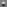

Project 2
Fun with Filters and Frequencies!
Yuan-Hao Huang
yhhuang20@berkeley.edu
Part 1.1
The original image:

Convolving with D_x:
Convolving with D_y:

Gradient magnitude image:
Edge image (threshold = 0.1):

The gradient magnitude image is constructed by calculating the RSS (square root of sum of square) of the partial derivatives of the image in the x and y direction.
Part 1.2-1
The Gaussian filter used in this section is a 7x7 filter with sigma=1.
Applying Gaussian filter to the original image:
Convolving with D_x:
Convolving with D_y:
Gradient magnitude image:
Edge image (threshold = 0.06):

Observation: With the Gaussian filter, the image becomes less noisy in the background but more blurred.
The magnitude of gradient become significantly smaller, thus requires a smaller threshold to construct the edge image.
The resulting edge image was much clearer than before.
Part 1.2-2
DoG filter X (conv(Gaussian, D_x)):
DoG filter Y (conv(Gaussian, D_y)):

Convolving with DoG_X:
Convolving with DoG_Y:
Gradient magnitude image:
Edge image (threshold = 0.06):

The resulting images were exactly the same as the previous one (shown below)!
Part 2.1
The original image:

Now comes the sharpened version.
We use a Gaussian filter of size 49x49 and sigma=8 to extract the high-frequency components.
We also tried different valus of alphas (how many pieces of high-frequency components are added).
ahpha = 0.5:

ahpha = 1.0:

ahpha = 2.0:

ahpha = 4.0:

By increasing alpha, we can indeed sharpen the image.
However, if alpha is too large (alpha = 4 in this case), the resulting image becomes kind of weird.
Here are some other examples.
I took these photos during a trip to Hokkaido, Japan this summer.
It was a fantastic place!
ahpha = 0.5:

ahpha = 1.0:

ahpha = 2.0:

ahpha = 4.0:

ahpha = 0.5:

ahpha = 1.0:

ahpha = 2.0:

ahpha = 4.0:

Finally, here is a sharp image:

and its blurred version:

Now we try to sharpen the blurred version.
ahpha = 0.5:

ahpha = 1.0:

ahpha = 2.0:

ahpha = 4.0:

The resulting image does not look pretty well, especially the text on the rocket.
The smoothing process erased this information, and the sharpening process was not able to recover it.
Part 2.2
Here are some of the results.
In order to make the high-frequency image more obvious, when adding two image, I used some weighted average instead of direct average.
The weight of the high-frequency image is set to 1.5~2.
image 1 (near):

image 2 (far):

hybrid:

image 1 (near):

image 2 (far):

hybrid:

image 1 (near):

image 2 (far):

hybrid:

image 1 (near):

image 2 (far):

hybrid:

image 1 (near):

image 2 (far):

hybrid:

Here is the frequency analysis of the last example.
image 1 (near):
image 1 (high pass):

image 2 (far):
image 2 (low pass):

hybrid:
frequency analysis:

frequency analysis:

frequency analysis:

frequency analysis:

frequency analysis:

Failure example:
image 1 (near):

image 2 (far):

hybrid:

The image does not look much different when seeing from different distance.
I guess it is because the high-frequency component (image 1) is too strong.
Part 2.3
The table below shows the intermediate steps of creating an oraple.
The columns from left to right are:
- the Gaussian stack of apple,
- the Laplacian stack of apple,
- applying mask on the Laplacian stack of apple,
- combining apple and orange of that apple,
- applying mask on the Laplacian stack of orange,
- the Laplacian stack of orange,
- the Gaussian stack of orange.
The rows from top to bottom are:
- level 0 of the stack,
- level 2 of the stack,
- level 4 of the stack,
- level 6 of the stack.
The final result (combination of all levels):

Part 2.4
Here are some results of blending two images:
image 1:

image 2:

blended:
mask:
image 1:
image 2:
blended:
mask:
image 1:
image 2:
blended:
mask:
The table below shows the intermediate steps of the last example.
The structure of the table is same as above.
References
numpy
numpy.reshape
numpy.dsplit
numpy.dstack
numpy.min
numpy.square
numpy.heaviside
numpy.concat
numpy.arange
numpy.matmul
numpy.transpose
numpy.clip
numpy.zeros
numpy.mean
scipy
signal.convolve2d
geeksforgeeks
Python OpenCV – getgaussiankernel() Function
stackoverflow
Reshaping png image read by skimage.imread return ValueError
Numpy, multiply array with scalar
Limiting floats to two decimal points
How to calculate a logistic sigmoid function in Python?